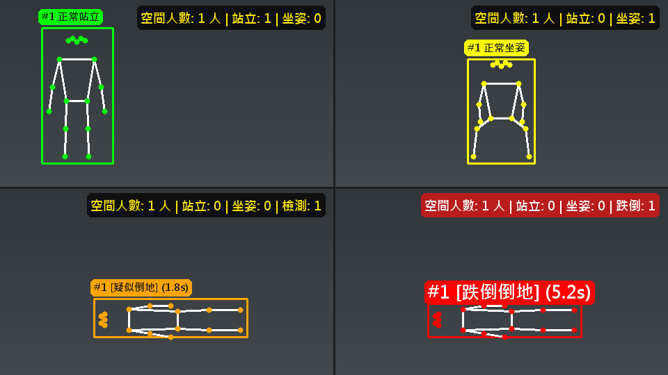

專題製作 · 長照居家 · AI 視覺
用 四台 Tapo C220 攝影機、YOLOv8 姿態偵測與 Claude Code 對話，一步一步做出：跌倒就拍照、通知家人，並讓雲台自動鎖定追蹤倒地的人，人站起來走動也持續跟著。這份手冊附情境動畫與四組可以自己調參數的互動模擬，先在網頁上看懂原理，再動手做。
老人家在家跌倒，最怕的是「沒人發現」。這個專題把家裡的攝影機變成一個會判斷、會通知、還會轉頭看的助手：
影像與音訊走 RTSP（兩條不同串流），雲台走 ONVIF，三者都要連到同一個區域網路。

下面四組模擬都在瀏覽器裡跑，不會開你的鏡頭，用的公式和實作手冊裡的程式一致。先看情境動畫了解全貌，再用三組互動模擬自己調參數。
俯視圖：左上角是攝影機，虛線扇形是它看得到的範圍。按「播放」或點右邊的數字逐步看。
選一種姿勢，拖曳「躺平持續秒數」，看標籤怎麼變。也可以按下面兩顆按鈕，比較「彎腰撿東西」和「真的跌倒」。
選擇姿勢開始。
上方是「鏡頭看到的畫面」：中間線是畫面中心，淺色帶是死區（人在帶內就不動）。下方折線是人相對畫面中心的偏移，越貼近 0 越好。先按「一鍵比較」看舊版固定步長與現行比例修正的差別，再自己拉參數。
人一站起來，AI 就不再說他「跌倒」，怎麼知道還是同一個人？答案是顏色直方圖。按「① 鎖定」記下藍衣人的特徵，再按「② 他站起來」比對畫面中所有人。把夜間紅外線灰階打開，看看會發生什麼事。
先按「① 鎖定」。
程式把人物外框裡的每個像素轉成 HSV，統計「色相（Hue）× 飽和度（Saturation）」的分布，得到一張直方圖。兩張直方圖 p、q（各自加總為 1）用 Bhattacharyya 距離比較：d = √(1 − Σ√(pᵢ·qᵢ))，0 表示完全一樣，1 表示完全不同（OpenCV：cv2.compareHist(..., cv2.HISTCMP_BHATTACHARYYA)）。距離小於 0.6 才算同一人。
灰階畫面裡，所有人的飽和度都是 0，直方圖幾乎一模一樣，所以分不出誰是誰——這就是夜間紅外線模式下顏色追蹤會失效的原因。
401 Unauthorized 就是這台還沒設。pip install opencv-python ultralytics onvif-zeep numpy pillow pip install SpeechRecognition pyttsx3 pycaw winget install Gyan.FFmpeg python --version # 建議 3.11 或 3.12；torch 裝不起來時改用這兩個版本 ffmpeg -version
ultralytics 會一併安裝 torch，檔案很大，安裝到一半不要強制中斷。pytapo 不需要安裝（韌體更新後已無法使用）。
Test-NetConnection -ComputerName 192.168.x.x -Port 554 ffprobe -rtsp_transport tcp -show_streams rtsp://帳號:密碼@192.168.x.x:554/stream1
TcpTestSucceeded : True 才進下一步；False 或 ping「目的地不可達」先排除網路，不要去改程式。stream1 有影像＋音訊，stream2 只有影像。
機密規則
camera_config.py）與 LINE token（line_config.py）只放自己電腦，不貼進對話、不上傳 GitHub。提示語裡說「密碼我會自己填進設定檔」。| 原則 | 怎麼做 |
|---|---|
| 1. 先說要什麼 | 講想要的結果，找哪個檔案、用哪個函式庫是 AI 的工作。 |
| 2. 一次一個階段 | 先能動再求完整；驗收通過才進下一階段，出問題範圍小。 |
| 3. 回報看到的 | 哪個按鈕、什麼操作、看到什麼、預期什麼，並貼上日誌。診斷交給 AI。 |
| 4. 方向、顏色、聲音親自確認 | 「鏡頭往哪轉」「字看不看得清楚」AI 從截圖只能間接推測，容易判斷錯；直接說你看到的。 |
| 5. 先驗證邏輯再上真機 | 能用假資料測的（換算公式、比對邏輯）要求 AI 先寫測試跑過。 |
| 6. 收工前留一手 | 備份一份、把校準值與踩過的坑寫成紀錄，下次接得起來。 |
避免
「怎麼怪怪的，你看一下。」
沒說哪個畫面、哪個按鈕，AI 只能整個系統重查。
建議
「按地下室的停止按鈕後，畫面卡在最後一張，沒有變成『串流已停止』。」
一句話鎖定到特定程式。
避免
「追蹤不行。」
不知道是不動、太慢、還是方向錯。
建議
「人站定不動之後，鏡頭會左右來回移動停不下來。」
直接指出「過衝震盪」——到模擬 C 試試看。
本頁提示語中的 【…】 要換成你自己的內容。
建議安排：Level 1 基礎（階段 0–2，1–2 次課）、Level 2 進階（階段 3–5，2 次課）、Level 3 挑戰（階段 6–8，2 次課）。提示語右上角可以一鍵複製。
提示語 0-1 開場
我是【學校/科系】的學生，正在做「居家長照跌倒偵測與自動追蹤」專題。環境：Windows 11、Python 【版本】，攝影機是 TP-Link Tapo C220，共【數量】台，電腦和攝影機在同一個區域網路。請在資料夾【路徑】建立專案，之後所有檔案都放這裡。 工作方式請照這樣： 1. 一次只做一個功能，做完要實際執行驗證（截圖或日誌為證）再回報，不要只說「寫好了」。 2. 帳號、密碼、IP 不要寫死在程式裡，集中放 camera_config.py。 3. 遇到必須由我親自確認的事（例如鏡頭實際往哪個方向轉、有沒有聽到聲音），請直接問我，不要用猜的。 4. 每次改完程式，告訴我怎麼重新啟動。 先不要寫程式，告訴我你打算分成哪幾個步驟。
提示語 1-1 單鏡頭檢視
請寫一支 01_camera_viewer.py：用 OpenCV 讀取 Tapo 攝影機的 RTSP 串流並顯示，按 q 離開。要求： - 網址格式 rtsp://帳號:密碼@IP:554/stream2（stream2 是低解析度副串流，較省效能）。 - 用 TCP 傳輸：必須在 import cv2 之前設定 os.environ["OPENCV_FFMPEG_CAPTURE_OPTIONS"] = "rtsp_transport;tcp"。 - 讀取失敗要自動重連（等 2 秒再試），不可以讓整個視窗消失。 - 帳號、密碼、IP 放 camera_config.py 的 CAMERAS 字典（名稱 → ip / username / password），並提供 rtsp_url(名稱) 函式。 我的攝影機 IP 是【IP】，攝影機帳號是【Tapo App 設定的攝影機帳號】（密碼我會自己填進 camera_config.py，不要貼給你）。寫完請直接執行，並用截圖或日誌確認真的有畫面。
import cv2 之後（無效）。提示語 2-1 儀表板
請用 Tkinter 寫 tapo_multi_camera_dashboard.py，四台鏡頭 2×2 排列。每台一個 CameraFeed 類別，各自一個擷取執行緒，UI 用計時器定期取最新畫面顯示（不要在擷取執行緒裡操作 UI）。每張卡片要有：名稱與 IP、FPS、人數徽章（先放 0）、啟動/停止按鈕、放大按鈕（雙擊畫面也可以切換放大與四分割），上方工具列要有「全部啟動」「全部停止」。 停止時畫面必須變成「串流已停止」的提示文字，不可以凍結在最後一張影像；停止後再啟動要能恢復。斷線要自動重連。攝影機名稱與 IP 都從 camera_config.py 讀取。寫完請實際操作「停止 → 啟動」並截圖給我看。
stop() 清空，影格又被寫回去。寫入前檢查 running，結束後再清一次，UI 取畫面也判斷 running。提示語 3-1 姿態偵測模組
請新增 ai_fall_detector.py，類別 AIFallDetector，用 ultralytics 的 yolov8n-pose.pt 偵測人與 17 個關鍵點，並整合進儀表板。要求： 1. 省 CPU：推論尺寸 imgsz=256、信心 0.35；每 4 幀才真正推論一次，其餘幀沿用上次結果畫框，避免標註閃爍。 2. 姿態判斷（COCO 關鍵點：5/6 肩、11/12 髖）：算「肩膀中點到髖部中點」連線相對水平的角度；角度小於 25° 且肩髖垂直落差 ≤ 20 像素 → 躺平。沒有肩髖關鍵點時，外框長寬比 < 0.55 也算躺平。站立：長寬比 ≥ 1.35 且角度 ≥ 65°；其餘為坐姿。關鍵點信心門檻 0.25。 3. 持續時間：躺平要持續 3 秒才算「跌倒倒地」，未滿 3 秒顯示「疑似倒地」（避免彎腰撿東西誤判）。 4. 標籤顏色：站立綠、坐姿黃、疑似倒地橘、跌倒倒地紅。注意 OpenCV 是 BGR 順序，紅色要寫成 (0,0,255)。 5. 文字可讀性：淺色背景配深色字、深色背景配白字（用背景亮度自動判斷）；「跌倒倒地」的標籤字體要放大。 6. 中文顯示：cv2.putText 不能顯示中文，請用 PIL 搭配微軟正黑體繪製。 7. 畫面右上角顯示「空間人數 / 站立 / 坐姿（/ 跌倒）」統計。卡片標題的人數徽章也要更新。 寫完請先用假的關鍵點資料測試四種狀態的畫面都能正確畫出來（不用等真人演），把四種狀態拼成一張圖給我看。
C:\Windows\Fonts\msjh.ttc。imgsz，不要降低信心門檻硬撐。提示語 4-1 雲台模組
請新增 tapo_controller.py，用 ONVIF 協定（連接埠 2020，套件 onvif-zeep）控制雲台。不要用 pytapo：2026 年 7 月 Tapo 韌體更新後私有協定交握改了，pytapo 登入會失敗。 請先寫一小段程式查詢這台攝影機的 PTZ 能力（GetNodes、GetPresets、GetConfigurationOptions、GetStatus），把結果給我看，確認支援哪些功能（特別是有沒有「歸位」與速度範圍）再開始寫控制功能。 功能：相對步進移動 relative_move(dx, dy, speed)（按一下動一小步，硬體自己煞車）、連續移動 + 停止、歸位、巡航。在儀表板每張卡片下方加：◀ ▲ ▼ ▶、停止、歸位、巡航。 方向設計成：「按▲鏡頭要往上看」。每台攝影機在 camera_config.py 有 pan_invert / tilt_invert（1 或 -1）可調。不要自己猜方向：寫完告訴我怎麼測，我會回報鏡頭實際往哪邊轉，再由你調整。
tilt_invert 改 -1（左右同理 pan_invert），重啟程式再確認。四台可能各不相同。tilt_invert 完全沒反應 → 專案裡有不只一份 camera_config.py，程式載入的是另一份。請 AI 印出 camera_config.__file__，並只留一份。print 出錯誤。HomeSupported = False 且沒有預設點，用 AbsoluteMove(0,0) 歸位會轉去看牆壁。改成先手動調好角度，用 SetPreset 存預設點，歸位時 GotoPreset。line_config.py。界線
提示語 5-1 警報流程
請在儀表板加入「跌倒警報流程」。當某台鏡頭第一次被判定「跌倒倒地」時，依序做： 1. 在 emergency_snapshots/ 存一張快照，檔名含鏡頭名稱與時間，影像上標示警報時間。 2. 用 LINE Messaging API 的 broadcast 發一則通知（含鏡頭名稱、時間、空間人數）。推播請用獨立子行程（line_worker.py），並用標準函式庫 http.client，不要用 requests——有些電腦上 requests 呼叫外部 HTTPS 會卡死不理 timeout。 3. 鏡頭自動往下微轉，看向地面。 4. 用 pyttsx3 在電腦播放安撫語音（做成可開關，預設關閉）。 用 is_emergency 旗標避免同一次跌倒重複通報。一定要同時提供「解除警報」按鈕：平常灰色不可按，警報中變紅色可按，按下才把旗標重設、恢復偵測下一次跌倒。LINE 失敗（例如額度用完回 HTTP 429）要把錯誤印出來，不可以整個程式當掉。測試時請不要真的發 LINE，先用假的函式代替，我確認流程正確後再接真的。
is_emergency 設 True 後沒有重設機制。time.sleep 放主執行緒會卡住擷取，要放背景執行緒。先用指令驗證兩個事實
pcm_alaw、8 kHz、單聲道），用 ffprobe 分別檢查即可確認。語音監聽必須接 stream1，否則 ffmpeg 會一直等不到音訊而卡住。speech_recognition.Microphone() 聽的是電腦本機麥克風，不是攝影機的。提示語 6-1 語音監聽
請替每台攝影機各加一個「語音監聽」背景執行緒，並在工具列加一顆總開關「語音求救：開啟 / 關閉」（預設關閉）。要求： 1. 用 ffmpeg 讀取該台的 RTSP stream1（-vn -acodec pcm_s16le -ac 1 -ar 16000 -f s16le pipe:1），每 3 秒一段。 2. 巨響偵測：該段音量 RMS 大於 0.09 → 視為巨響/尖叫，觸發警報。 3. 關鍵字偵測：用 SpeechRecognition 的 recognize_google(language="zh-TW") 轉文字，命中關鍵字清單（必須含「求救」「救命」「救我」「幫我」「跌倒」「好痛」「起不來」「緊急」等）就觸發警報。每次辨識到的文字都要 print 出來，方便除錯。 4. 觸發後走跟跌倒警報同一套流程（拍照、LINE、安撫語音），訊息裡要寫明是哪一台鏡頭。觸發後休息數秒避免連發。 寫完請先用 ffprobe 證明 stream1 有音訊軌，並抓 3 秒音訊算出 RMS 給我看，再讓我實際對鏡頭講話測試。
GetAudioOutputs() 回空值、deviceio 服務被攝影機拒絕——對講走 TP-Link 私有協定，目前不通。安撫語音只能從電腦喇叭播放。這是「查證後承認做不到」的好範例：不要硬做，寫進限制。提示語 7-1 鎖定追蹤（一次講完設計）
請替 CameraFeed 加入「跌倒鎖定追蹤」。某人被判定「跌倒倒地」後，鏡頭要自動鎖定追蹤他，直到我按「解除追蹤」或他舉起右手。設計要求： 1. 認得同一個人：鎖定當下擷取他人物外框的 HSV 顏色直方圖（H、S 兩個通道）當特徵。之後不管他站起來、坐下、走動，都用 cv2.compareHist（Bhattacharyya 距離，小於 0.6 才算同一人）在畫面中找回他。不可以因為姿態不再是「跌倒」就跟丟，也不可以追到別人。每次成功比對後用最新畫面更新特徵。 2. 移動方式：比例修正，不要固定步伐。算人物中心相對畫面中心的偏移（-1 ~ +1）；偏移的絕對值在 0.18 以內（死區）不動；超出才動，移動量 = 偏移 × 最大步長 0.12。雲台馬達速度用硬體上限 1.0。每 0.2 秒最多修正一次。 3. 方向：直接沿用方向鍵按鈕（階段 4）已校準好的 ptz_step 慣例，不要重新猜正負號。人在畫面右邊 → 往右轉；在下方 → 往下轉。 4. 兩種解除追蹤方式（跟「解除警報」是分開的兩件事，警報仍保留）： - 卡片上的「解除追蹤」按鈕（正在追蹤時才亮起）。 - 被追蹤者舉起右手：COCO 關鍵點 10（右手腕）的 y 座標比關鍵點 6（右肩）的 y 小 20 像素以上，且兩點信心都 > 0.25。但人還躺著（跌倒倒地狀態）時不要檢查舉手，因為躺姿手腕常常看起來比肩膀高，會誤判。 5. 按「解除警報」要同時清除追蹤特徵，並讓下一次新警報能重新追蹤。 6. 追蹤的每一步都要 print 日誌（鎖定、偏移量、決定的移動、不需要動、找不到人），並且不可以把例外靜默吞掉。 請先用假資料寫單元測試驗證：(a) 人在左/右/上/下/中央時算出的移動方向；(b) 畫面有兩個穿不同顏色的人，其中一個站起來走到另一側時仍追對人；(c) 躺著手腕高於肩膀不會誤判舉手、站著舉手會解除追蹤；(d) 偏移越接近中心修正量越小。測試全過再讓我用真機試。
| 你說 | 發生了什麼／AI 怎麼處理 |
|---|---|
| 「有稍微動一下」 | 追蹤動兩步就停。日誌顯示「警報中但沒有跌倒中的人」——人一站起來就不再是跌倒，舊邏輯只追跌倒者。→ 改成顏色特徵鎖定。 |
| 「追蹤速度要再加快」 | 檢查間隔 1 秒 → 0.5 秒、步長加大、馬達速度 0.5 → 0.8 → 1.0；同時新增「解除追蹤」按鈕與舉右手手勢。 |
| 「這次不會追蹤」 | 日誌顯示剛鎖定就「偵測到舉起右手」，躺姿被誤判成舉手。→ 躺著不檢查舉手。 |
| 「雲台速度可以再快嗎」 | 馬達速度已是硬體上限 1.0（ONVIF 範圍 0–1），只能加大步長（0.12 → 0.2）與縮短檢查間隔（0.25 → 0.2 秒）。 |
| 「人定點不動後，雲台會左右來回移動」 | 固定步長 0.2 太大，衝過頭又反向修正。→ 改成比例修正（最大 0.12）＋加大死區（0.15 → 0.18）。這就是模擬 C 展示的現象。 |
真正的反應速度天花板
已知限制（要誠實寫進報告）
提示語 8-1 另存備份
功能都穩定了。請先把整個專案資料夾完整複製一份，新資料夾名稱為【民國年-月-日-專案名稱】，原資料夾保留不動，複製完列出新資料夾的檔案清單與大小讓我確認。
提示語 8-2 留下紀錄
請把今天的做法與踩過的坑整理成一份紀錄（不要貼程式碼，也不要寫任何帳號、密碼或 token），方便下次接著做。重點只寫「看程式碼看不出來」的事： - 已經校準好的數值（例如每台鏡頭的 pan_invert / tilt_invert、各項門檻），以及當初怎麼確認的。 - 踩過的坑與根本原因（例如多份設定檔、stream2 沒音訊、LINE 額度）。 - 尚未完成的事與下一步（例如換新的 LINE 通道、修正歸位）。
提示語 8-3 安全檢查
請檢查整個專案資料夾，列出所有含有帳號、密碼、token 或 IP 的檔案，說明哪些絕對不能上傳或分享，並幫我建立一份 .gitignore 與一份「可分享版」的範例設定檔（把機密換成假值）。
先判斷是網路、設定、還是程式，再決定要不要動程式碼。
| 症狀 | 最可能的原因 | 處理 |
|---|---|---|
| RTSP 回 401 | 該台沒設「攝影機帳號」或打成雲端帳號 | Tapo App → 進階設定 → 攝影機帳號，每台各設一次。 |
| ping「目的地不可達」、554 埠連不上 | 路由器 IoT 隔離／訪客網路把攝影機隔到獨立網段 | 到路由器 App（例如 Deco）關閉 IoT 隔離；電腦與攝影機同一個 SSID。不要改程式。 |
| ping 純逾時、IP 在別的網段 | 攝影機實際在另一個網路，電腦沒有路由過去 | 把攝影機連回與電腦相同的 Wi-Fi，更新設定檔 IP。 |
| 花屏、斷幀 | RTSP 走 UDP | rtsp_transport;tcp，且要在 import cv2 之前。 |
| 同時開多台，最後一台 30 秒逾時 | 前幾台載入模型吃光 CPU | 單獨重啟那台，或錯開啟動。 |
| 中文標籤變問號 | cv2.putText 不支援中文 | 改用 PIL + 微軟正黑體。 |
| 按停止畫面凍結 | 擷取執行緒競速寫入 | 寫入前檢查 running，結束後再清一次。 |
| 按▲鏡頭往下 | tilt_invert 不對，或改到沒被載入的設定檔 | 回報實際方向 → 改 -1 → 重啟；印出 __file__ 確認載入哪份。 |
| 按「歸位」後鏡頭看牆壁 | AbsoluteMove(0,0) 不是面向房間 | 改用 SetPreset / GotoPreset。 |
| LINE 失敗 429 | 免費額度用完 | 等下月、升級，或換專屬官方帳號與 token。 |
| LINE 呼叫卡住 | requests／urllib3 在某些電腦被資安軟體卡住 | 改用 http.client，獨立子行程送出。 |
| 只通報一次就不再通報 | is_emergency 沒有重設機制 | 加「解除警報」按鈕重設旗標。 |
| 喊「求救」沒反應 | 語音總開關沒開；或接到 stream2（沒音訊） | 打開開關；音訊改接 stream1（用 ffprobe 驗證）。 |
| 日誌有辨識「求救」但沒觸發 | 關鍵字清單沒有這個詞 | 補齊清單。 |
| 追蹤站定後左右來回晃 | 固定步長衝過頭 | 改比例修正、加大死區（模擬 C）。 |
| 追蹤剛鎖定就停 | 躺姿被誤判成舉手 | 人還躺著時不檢查舉手手勢。 |
| 人站起來後追蹤停止 | 只追「跌倒狀態」的人 | 改用顏色特徵追蹤同一人。 |
| 改了程式沒變化 | 沒重啟（沒有熱重載），或改到別份檔案 | 完整關閉後重啟；確認實際載入的檔案。 |
這是老師版本實測後的數值，可當起點。每個人的鏡頭位置、光線、網路不同，請自己微調，並請 AI 說明每個參數的作用。
| 參數 | 數值 | 意義／調整方向 |
|---|---|---|
| 跌倒確認時間 | 3.0 秒 | 躺平持續多久才算跌倒；縮短更靈敏但誤報增加。 |
| 偵測信心 | 0.35 | 低於此值的人不算。 |
| 推論尺寸 imgsz | 256 | 越小越快、越不準。 |
| 推論間隔 | 每 4 幀 | CPU 吃緊時加大；想更即時就縮小。 |
| 關鍵點信心 | 0.25 | 判斷肩、髖、手腕是否可用。 |
| 躺平判定 | < 25° | 肩—髖連線角度且肩髖垂直落差 ≤ 20 像素；或長寬比 < 0.55（無肩髖時）。 |
| 站立判定 | ≥ 65° | 且長寬比 ≥ 1.35；或肩髖落差 > 60 像素且角度 ≥ 70°。 |
| 文字對比門檻 | 亮度 140 | 背景亮度高於此用深色字。 |
| 追蹤檢查間隔 | 0.2 秒 | 受推論頻率限制，再小意義不大。 |
| 追蹤死區 | 0.18 | 偏移（相對半個畫面）小於此不動；越大越穩、越不靈敏。 |
| 最大步長 | 0.12 | 比例修正的上限；太大會震盪。 |
| 雲台速度 | 1.0 | 硬體上限（ONVIF 速度範圍 0～1）。 |
| 顏色比對門檻 | < 0.6 | Bhattacharyya 距離，越小越像。 |
| 舉手判定 | 腕比肩高 20px | 右手腕 y < 右肩 y − 20；躺著時不判。 |
| 音量門檻 RMS | 0.09 | 巨響／尖叫；環境吵就調高。 |
| 語音分段 | 3 秒 | 16 kHz、單聲道。 |
| 標籤字級 | 15 / 26 | 一般／跌倒倒地。 |
已知限制
camera_config.py、line_config.py 不要貼進對話、不要上傳 GitHub、不要放在公開分享的雲端連結。